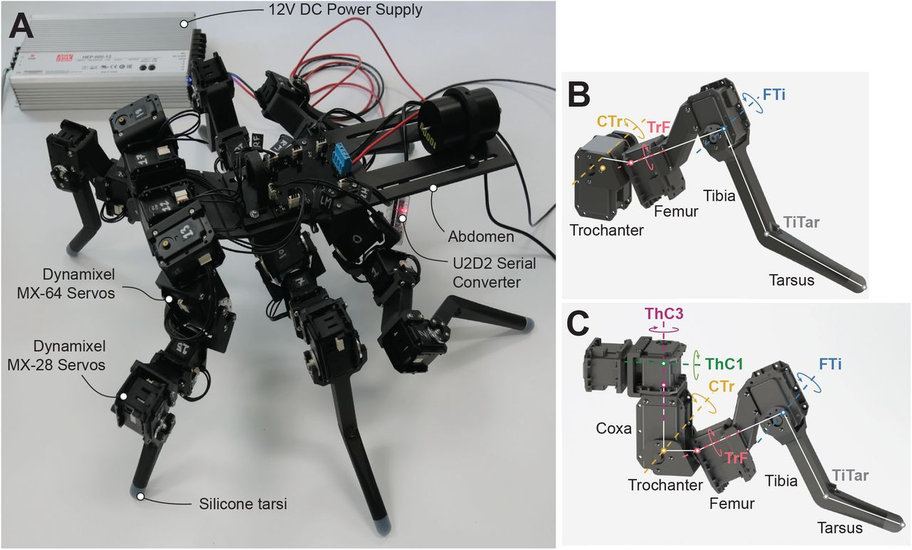

Передо мной схема классического гексапода — шестиногого шагающего робота. Если вы думаете, что заставить кусок металла ходить по пересечённой местности легко, попробуйте как-нибудь посчитать обратную кинематику для восемнадцати суставов одновременно, ещё и с учётом гравитации и инерции. Шагоход — это не игрушка на колёсах. Это сложнейшая биомеханическая сеть.
Давайте разберём эту конструкцию по косточкам: где стоят приводы, что они делают и, главное, почему конструктор выбрал именно такие.

Сердце и нервы: питание и связь
В левой верхней части схемы — база питания и коммуникаций:
- Блок питания 12 V DC. Сердце машины. Шагоход жрёт ток как голодный зверь, особенно в момент подъёма корпуса из положения «лёжа». 12 В — золотой стандарт: компромисс между силой тока, габаритами проводки и безопасностью.
- Конвертер U2D2. Переводчик. Центральный контроллер (мозг робота) говорит на одном языке, умные сервоприводы — на другом. U2D2 берёт команды управления и переводит их в пакетный последовательный протокол (RS-485 или TTL), понятный суставам робота.
Анатомия лапы: почему используются разные моторы
Каждая лапа гексапода — это полноценный манипулятор. Чтобы робот не просто волочил ноги, а переступал через камни и адаптировался к рельефу, на одну лапу нужно минимум 3–4 степени свободы. На фото вы видите умные сервоприводы Dynamixel серий MX-64 и MX-28. Это не дешёвые авиамодельные машинки, а модули с обратной связью и цифровой шиной.
1. Тяжёлая артиллерия: базовые суставы (таз и бедро)
Ближе всего к корпусу находятся самые нагруженные узлы. Они держат на себе почти весь вес робота.
- Coxa (тазовый сустав). Здесь стоят мощные приводы MX-64. Один мотор разворачивает лапу вперёд-назад, второй поднимает и опускает её относительно корпуса. По сути это рулевое управление и основной подъёмный контур.
- Femur (бедро). Следующий сустав. Тоже MX-64, который задаёт высоту подъёма «колена» и отвечает за то, сможет ли робот вообще оторвать брюхо от земли.
Почему именно MX-64? Физика беспощадна. Чем ближе сустав к корпусу, тем большее плечо рычага на него давит. Если поставить сюда слабый мотор, робот просто ляжет на брюхо и начнёт жарить обмотки в попытке встать. MX-64 дают достаточный крутящий момент, чтобы держать тяжёлый металлический панцирь и не превращаться в одноразовый предохранитель.
2. Лёгкая пехота: дистальные суставы (голень и «стопа»)
Чем дальше от корпуса, тем меньше вес, но тем выше требования к скорости реакции и точности.
- Tibia (голень) и Tarsus (стопа). Здесь конструктор переходит на младшую модель — MX-28. Эти приводы управляют углом наклона голени и постановкой «ступни» на грунт.
Почему MX-28? Главное правило инженера-механика: никогда не вешай лишний вес на конец длинного рычага. Тяжёлый мотор на конце лапы создаст огромную инерцию. При быстрых шагах лапа будет дрожать, промахиваться мимо точки опоры и рвать редукторы. MX-28 легче и компактнее: их момента достаточно для точного позиционирования стопы, а снижение массы дистальной части разгружает бедренные MX-64.
Главный секрет: зачем здесь умные шинные приводы
Выбор Dynamixel не случаен. Посмотрите на разводку кабелей: к каждому мотору не идёт отдельный пучок проводов из корпуса. Приводы соединены гирляндой (daisy-chain): один кабель выходит из базы, заходит в таз, дальше в бедро, в голень и в стопу. Это резко снижает вес проводки и уменьшает шанс, что лапа запутается в собственной «нервной системе».
Второй плюс — обратная связь. Если гексапод опускает лапу и натыкается на камень раньше, чем ожидалось, датчик тока в приводе фиксирует скачок нагрузки. Контроллер получает сигнал о контакте и корректирует движение: меняет высоту, траекторию или силу шага. Робот не пытается проломить бетон и не сжигает электронику в борьбе с неподвижной преградой.
Итог
Эта схема — пример здоровой инженерной школы. Мощные приводы ставятся у основания рычагов, где момент максимальный. Лёгкие и быстрые — на концах, где важны точность и минимальная инерция. Цифровая шина объединяет всё это в одну нервную систему и превращает груду металла в организм, который может выжить на пересечённой местности.
Те же принципы мы используем, когда проектируем свои модули: сначала — правильное распределение момента и массы по звеньям, потом — надёжная нервная система, и только после этого — красота корпуса. Работайте умно, коллеги.